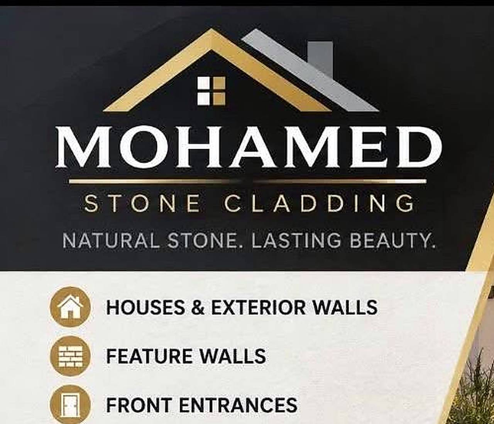

Houses & exterior walls
Full or part facades in natural stone, set out from the corners so the courses run true past windows, doors and downpipes.
Stone cladding and stonework for houses, entrances, columns and feature walls — laid level, coursed straight, and pointed clean so the wall reads as one surface.
Most jobs are one wall or one entry that has to look deliberate next to everything already there.
Full or part facades in natural stone, set out from the corners so the courses run true past windows, doors and downpipes.
Living rooms, fireplaces and entry walls. Stone carried inside needs the wall prepared flat first — the depth of the stone reads every mm of what is behind it.
Porticos, blade walls and entry piers, with the capping and returns finished so the detail looks complete from the street and from the door.
Piers, columns, garden walls and fence bases clad in stone, with the corners mitred rather than left open.
New stone against old render or brick: the junction is packed and set out so the new wall lines up with what is already there.
Working to the builder's set-out, with the stone chosen and the coursing agreed before the first sheet goes on the wall.
Natural stone is not a flat surface: the face, the depth and the tone change with the light. That is the reason to use it, and the reason it has to be set out properly — a course that runs out of level shows up far more in stone than it would in render.
Stone is also heavier than it looks. The wall has to be right behind it — flat, prepared and able to carry the weight — which is the part of the job that is never visible afterwards.

A photo, roughly how many square metres and what is behind the wall is usually enough to price the work.
The wall is checked for what is under it, how the corners fall and how much cutting the openings need.
Surface prepared flat, set-out lines run around the wall, and the stone laid out dry so the coursing can be seen before it is fixed.
Laid course by course, held to the line, with the corners mitred and the junctions to existing work packed and finished.
Pointing finished flush, the wall washed down, and the site left clean with the offcuts gone.
Roughly how many square metres, what is behind it, and where the openings and corners fall. Photos of the area help most.